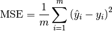
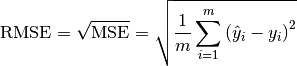
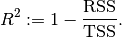

Statistics Preliminary¶
Note
If you only know yourself, but not your opponent, you may win or may lose. If you know neither yourself nor your enemy, you will always endanger yourself – idiom, from Sunzi’s Art of War
Notations¶
- m : the number of the samples
- n : the number of the features
 : i-th label
: i-th label : the mean of
: the mean of  .
.
Measurement Formula¶
- Mean squared error
In statistics, the MSE (Mean Squared Error) of an estimator (of a procedure for estimating an unobserved quantity) measures the average of the squares of the errors or deviations—that is, the difference between the estimator and what is estimated.

- Root Mean squared error

- Total sum of squares
In statistical data analysis the TSS (Total Sum of Squares) is a quantity that appears as part of a standard way of presenting results of such analyses. It is defined as being the sum, over all observations, of the squared differences of each observation from the overall mean.

- Residual Sum of Squares

- Coefficient of determination


Statistical Tests¶
Correlational Test¶
- Pearson correlation: Tests for the strength of the association between two continuous variables.
- Spearman correlation: Tests for the strength of the association between two ordinal variables (does not rely on the assumption of normal distributed data).
- Chi-square: Tests for the strength of the association between two categorical variables.
Comparison of Means test¶
- Paired T-test: Tests for difference between two related variables.
- Independent T-test: Tests for difference between two independent variables.
- ANOVA: Tests the difference between group means after any other variance in the outcome variable is accounted for.
Non-parametric Test¶
- Wilcoxon rank-sum test: Tests for difference between two independent variables - takes into account magnitude and direction of difference.
- Wilcoxon sign-rank test: Tests for difference between two related variables - takes into account magnitude and direction of difference.
- Sign test: Tests if two related variables are different – ignores magnitude of change, only takes into account direction.